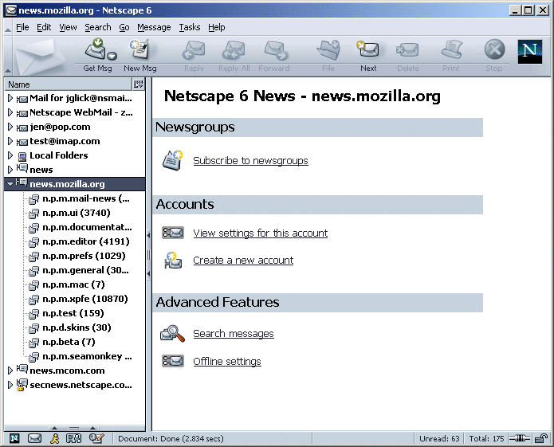
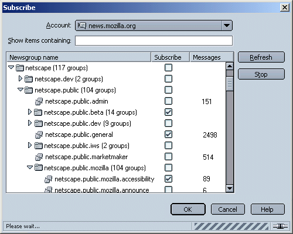
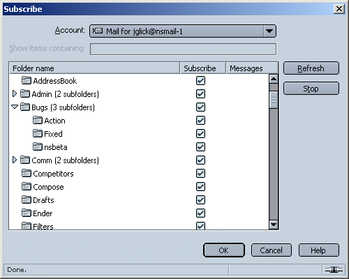
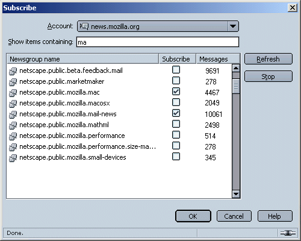
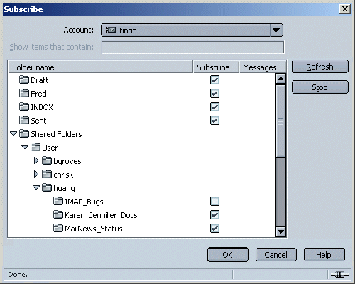

|
Buffy/Mozilla: Mail: Newsgroup Subscription |
UI Specification
|
|
Newsgroup Subscription |
Last
Modification:
|
|
Author: Jennifer Glick |
Status: Draft |
||||||||||
|
Quicklinks: Design Details |
Feature Team
Please post all comments and suggestions regarding this spec to the newsgroup, netscape.public.mozilla.mail-news. |
Provide a method for users to subscribe/unsubscribe to newsgroups
and IMAP folders.
Newsgroup users tend to be intermediate and advanced users.
Fundamental Tasks
Intermediate Tasks
- Subscripting/Unsubscribing to Newsgroups
- Switching News servers on the fly
- Using typedown feature for finding newsgroups
Advanced Tasks
- Subscribing to IMAP folders
Toolbar
Menu
Msg Context Menu
Account Central
None
File: Subscribe...
Context menu for account level folder pane items contain "Subscribe..."
When a news server is selected, Account Central displays "Subscribe to newsgroups".
When a user selects a news server in the Folder Pane, Account Central specific to that account is displayed in the right pane.



The dialog is resizable.
New newsgroups are added to the list when the user opens the dialog.
Building a list of current newsgroups is done asynchronously so that users don't have to wait for all newsgroups to download before they can interact with the Subscribe dialog.
Hovering the mouse cursor over a newsgroup name which has been truncated causes a Tooltip to be displayed which indicates the full name of the newsgroup (Not currently implemented).
The "Account:" dropdown menu is used to select a desired news or IMAP mail account. The user's configured NNTP and IMAP accounts are available. When this dialog opens the appropriate account should be pre-selected based on what account was active when the dialog was opened. The dropdown list contains icons in front of the account names to differentiate between IMAP and NNTP accounts (Not currently implemented).
The "Show items containing:" text field is used to find newsgroups containing specified words. As the user types in the field, the list if newgroups displayed in the list updates to match.

Double clicking on a line causes the subscribed state to toggle.
Clicking on the subscribe check box also toggles the subscribed
state.
Double-clicking on a twistie (the up and down arrows) should expand
and collapse the container.
Multiple selection is allowed in the list.
The text field on the dialog functions as both a place where users can enter a specific newsgroup they are looking for or can search for newsgroups that contain certain words. When the user first opens the Subscribe dialog, all available newsgroups are listed. As the user types, newsgroups matching their criteria remain in the list box while items that don't match are removed. Backspacing or deleting text in the text field updates the list box. Removing all text from the text field restores the list of all available newsgroups.
When newsgroups are being downloaded, the statusbar displays: "Downloading newsgroups: <n> received (<n>K read at <n>K/sec)" and the busy animated "barber pole" are displayed. "Done" is displayed once the download is complete.
If the server has shared folders turned on, the shared folders are displayed but not the users non-shared folders. Other users can subscribe/unsubscribe to shared folders using this dialog.

As a default, the displayed name for newsgroups is truncated to
display the first letter (followed by a period) of the names making
up a newsgroup. The last name of the newsgroup is displayed in full.
This conserves space will providing the most useful information for
the user. For example, "netscape.public.mozilla.mail-news" would be
displayed as "n.p.m.mail-news".
Users can specify whether they would like to see the full name or
truncated name of newsgroups in their Mail Folder Pane. This setting
is per news server/host and is accessed from the Account Settings
dialogs for the specific new server. As a default, newsgroup names
are truncated.
Two radio buttons:
If time permits, an advanced hidden preference could allow advanced users to specify how many words are truncated.
The following items are not yet implemented.
|
Issue |
Priority |
|
Opening the Subscribe dialog automatically following the Account Wizard for a new Newsgroup. Line of text that describes how to subscribe to newsgroups. |
P2 |
|
Sort by column header |
P2 |
|
Tooltip to expand name of truncated newsgroup (depends on trees) |
P2 |
|
News group does not exist - feedback/notified on selecting the newsgroup |
P2 |
|
Columns - Display number of Messages |
P3 |
|
Icons (News Account vs IMAP Account) displayed in "Account" dropdown |
P3 |
|
Separate tab - new newsgroups only (since view last refreshed). Do we still want this? |
P4 |
|
Separate tab - view subscribed to newsgroups only. Do we still want this? |
P4 |
|
Add a new news account from the Subscribe dialog (would launch Account Wizard) |
P4 |
|
Descriptions of newsgroups |
P4 |
|
Unsubscribe by dragging newsgroup to Trash (depends on other team) |
P4 |
|
Column selector widget |
P4 |
|
Newsgroup does not exist - notified on leaving Subscribe dialog |
P4 |